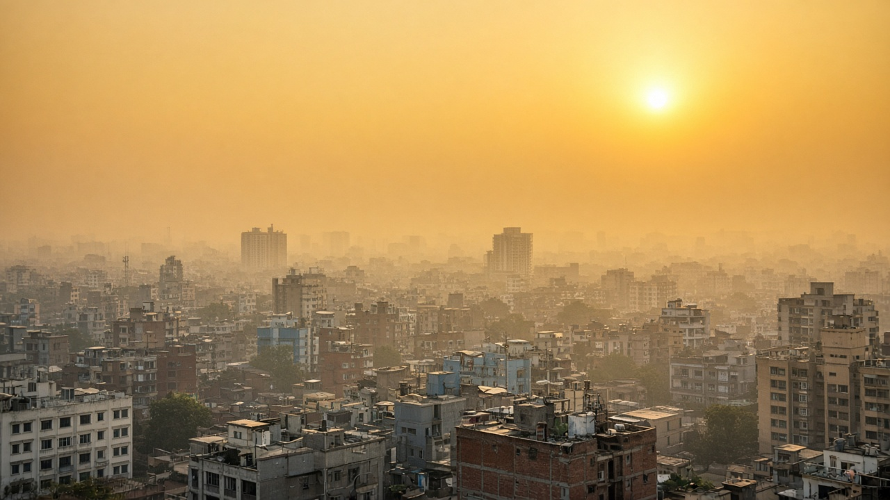
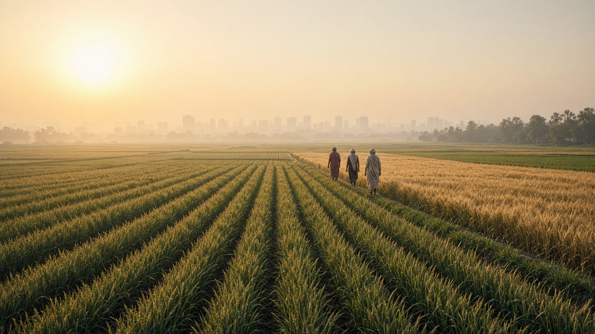
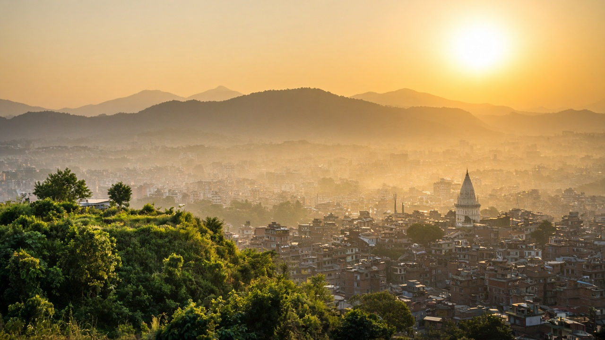

Ground-Level Ozone and Photochemical Smog
Published on August 20, 2026

Ground-level ozone is a secondary air pollutant formed when nitrogen oxides and volatile organic compounds react in the presence of sunlight. Unlike stratospheric ozone that shields Earth from harmful UV radiation, tropospheric ozone near the surface harms living organisms and materials. The chemistry involves photolysis of nitrogen dioxide, which generates atomic oxygen that combines with molecular oxygen to form ozone. Hydrocarbons from vehicles, solvents, and industrial processes participate in chain reactions that regenerate nitrogen dioxide and sustain ozone production throughout sunny afternoons. Peak concentrations often occur downwind of urban centers where precursor emissions have had time to react during transport.
Photochemical smog describes the broader mixture of pollutants, including ozone, peroxyacetyl nitrate, aldehydes, and fine particles that create hazy skies and sharp odors in congested cities. Exposure to elevated ozone inflames lung tissue, reduces lung function, aggravates asthma, and increases susceptibility to respiratory infections. Sensitive groups such as children, elderly people, outdoor workers, and individuals with pre-existing heart or lung disease face the greatest risk during afternoon hours when ozone levels peak. Vegetation also suffers: ozone enters stomata and damages photosynthetic tissue, reducing crop yields for wheat, rice, soybeans, and many fruit varieties.
Controlling ground-level ozone requires reducing precursor emissions rather than filtering ozone directly from ambient air. Stricter vehicle emission standards, vapor recovery at fuel stations, low-volatile coatings, and phasedown of solvent use in manufacturing cut the organic and nitrogen oxide inputs that drive smog formation. Urban planning that shortens commute distances and expands electric transit lowers traffic-related precursors. Regional coordination matters because ozone and its precursors cross municipal boundaries freely. Public AQI forecasts that highlight ozone episodes empower residents to limit strenuous outdoor activity and help agencies implement voluntary emission reduction measures on high-risk days.

भू-स्तरको ओजोन सूर्यको प्रकाशमा नाइट्रोजन अक्साइड र अस्थिर कार्बनिक यौगिक प्रतिक्रिया गर्दा बन्ने द्वितीयक वायु प्रदूषक हो। माथिल्लो वायुमण्डलको ओजोनले पृथ्वीलाई हानिकारक UV विकिरणबाट जोगाउँछ, तर ट्रोपोस्फियरमा सतह नजिकको ओजोनले जीव र सामग्रीलाई हानि पुर्याउँछ। रसायनमा नाइट्रोजन डाइअक्साइडको प्रकाश-विच्छेद, परमाणु अक्सिजन उत्पादन र अणु अक्सिजनसँग संयोजन भई ओजोन निर्माण हुन्छ। सवारी, विलायक र औद्योगिक प्रक्रियाबाट हाइड्रोकार्बनले नाइट्रोजन डाइअक्साइड पुन: उत्पादन गर्ने अनुक्रममा सहभागी हुन्छ र सन्नी दिउँसोभरि ओजोन उत्पादन जारी राख्छ। शहरबाट टाढाका क्षेत्रहरूमा, जहाँ अग्रदूतहरू यात्रा गर्दा प्रतिक्रिया गर्न पर्याप्त समय पाउँछ, उच्चतम सांद्रता पाइन्छ।
प्रकाश-रासायनिक धुंधका मुख्य घटकहरू ओजोन, पेरोक्सीएसिटिल नाइट्रेट, एल्डिहाइड र सूक्ष्म कण हुन् जसले धुंध्लो आकाश र तिखो गन्ध सिर्जना गर्छ। नाइट्रोजन अक्साइड र अस्थिर कार्बनिक यौगिकहरू प्रकाशमा प्रतिक्रिया गरी उत्प्रेरक चक्र मार्फत ओजोन उत्पादन गर्छन्, जुन दिनहरूसम्म रहन सक्छ र स्रोत क्षेत्रबाट सयौं किलोमिटर टाढासम्म यातायात हुन सक्छ। उच्च ओजोन संपर्कले श्वासप्रश्वास प्रणालीमा सूजन, दमा र संक्रमणको जोखिम बढाउँछ। ओजोनले वनस्पतिको प्रकाश-संश्लेषणमा क्षति पुर्याउँछ र गहुँ, धान र फलबालीको उत्पादन घटाउँछ।
भू-स्तरको ओजोन नियन्त्रणका लागि अग्रदूत उत्सर्जन घटाउनु मुख्य उपाय हो, हावाबाट ओजोन फिल्टर गर्नु सम्भव छैन। कडा सवारी उत्सर्जन मापदण्ड, इन्धन स्टेशनमा वाष्प पुन: प्राप्ति, कम-वाष्पशील कोटिङ र उत्पादनमा विलायक प्रयोग घटाउँदा स्मग निर्माणका अग्रदूत कम हुन्छन्। सहरी योजनाले यातायात दूरी छोटो र विद्युतीय सार्वजनिक यातायात विस्तार गरी यातायात-सम्बन्धित अग्रदूत घटाउँछ। क्षेत्रीय समन्वय आवश्यक छ किनभने ओजोन र अग्रदूतहरू नगरपालिका सीमा नाघेर फैलिन्छन्। AQI पूर्वानुमानले ओजोन प्रकरण देखाउँछ र बासिन्दुलाई बाहिरी कठिन कार्य सीमित गर्न मद्दत गर्छ।

भू-स्तर का ओज़ोन सूर्य के प्रकाश में नाइट्रोजन ऑक्साइड और वाष्पशील कार्बनिक यौगिकों की प्रतिक्रिया से बनने वाला द्वितीयक वायु प्रदूषक है। ऊपरी वायुमंडल के ओज़ोन से भिन्न, भू-सतह के निकट का ओज़ोन जीवों और सामग्री को नुकसान पहुँचाता है। रसायन में नाइट्रोजन डाइऑक्साइड का प्रकाश-विच्छेद, परमाणु ऑक्सीजन उत्पादन और अणु ऑक्सीजन के संयोजन से ओज़ोन निर्माण होता है। वाहन, विलायक और औद्योगिक प्रक्रियाओं से हाइड्रोकार्बन नाइट्रोजन डाइऑक्साइड पुन: उत्पादन की अनुक्रम में भाग लेते हैं और धूप वाली दोपहर भर ओज़ोन उत्पादन जारी रखते हैं।
प्रकाश-रासायनिक धुंध के मुख्य घटक ओज़ोन, पेरोक्सीएसिटिल नाइट्रेट, एल्डिहाइड और सूक्ष्म कण हैं जो धुंधली आकाश और तीखी गंध पैदा करते हैं। नाइट्रोजन ऑक्साइड और वाष्पशील कार्बनिक यौगिक प्रकाश में प्रतिक्रिया करके उत्प्रेरक चक्र के माध्यम से ओज़ोन उत्पादित करते हैं, जो दिनों तक रह सकता है और स्रोत क्षेत्र से सैकड़ों किलोमीटर दूर तक परिवहन हो सकता है। उच्च ओज़ोन संपर्क श्वसन प्रणाली में सूजन, दमा और संक्रमण का जोखिम बढ़ाता है। ओज़ोन वनस्पति के प्रकाश-संश्लेषण को नुकसान पहुँचाता है और गेहूँ, धान और फलों की पैदावार घटाता है।
भू-स्तर के ओज़ोन नियंत्रण के लिए अग्रदूत उत्सर्जन घटाना मुख्य उपाय है, वायु से ओज़ोन फ़िल्टर करना संभव नहीं है। कड़े वाहन उत्सर्जन मानक, ईंधन स्टेशन पर वाष्प पुन: प्राप्ति, कम-वाष्पशील कोटिंग और विनिर्माण में विलायक उपयोग घटाने से स्मग निर्माण के अग्रदूत कम होते हैं। शहरी योजना परिवहन दूरी छोटी करके और विद्युतीय सार्वजनिक परिवहन विस्तारित करके यातायात-संबंधित अग्रदूत घटाती है। क्षेत्रीय समन्वय आवश्यक है क्योंकि ओज़ोन और अग्रदूत नगरपालिका सीमा पार कर फैलते हैं। AQI पूर्वानुमान ओज़ोन प्रकरण दिखाता है और निवासियों को बाहरी कठिन गतिविधि सीमित करने में मदद करता है।